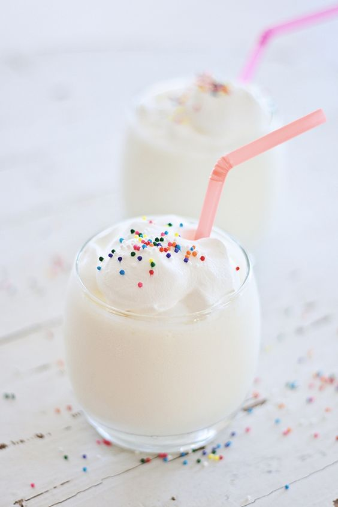

Cake Batter Shake!
Made by Caitlyn Patel

What will you need
- A blender
- A measuring cup
- Spoon/ice cream scooper
- A box of yellow cake mix or funfetti cake mix (both taste similar)
- A cup of milk of your choice (I suggest whole milk)
- Vanilla icecream or non-fat vanilla frozen yogurt
- Sprinkles and whipped cream if you want them (which I suggest!)
Instructions
Cake Batter Shake for one
- Get out all of your ingredients and tools
- Measure 1 cup of milk of your choice
- Pour milk into blender
- Measure about ¼ a cup of cake batter mix
- Pour cake batter into blender
- Now, take 1 ½ scoops of ice cream and put it in the blender
- Mix it up, until everything is blended
- Pour into cup and enjoy!
BONUS
Put whipped cream on the top of your shake and add as many sprinkles as you want!
References
-
Learn more about the dessert here!
-
Contact us here!